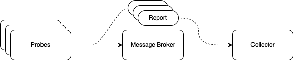

QoA4ML - Quality of Analytics for ML¶
Source code¶
Monitoring Client¶
QoA Client: an object that observes metrics, generates metric reports, and sends them to the Observation service via a list of connectors (e.g., messaging connector: RabbitMQ).
The developers only need to init a QoAClient at the beginning and use it to observe/evaluate metrics by self-instrumentation (calling its functions) at the right place in the source code.
- To initiate a QoA Client, developers can specify a configuration file path or refer to a configuration as a dictionary, or give the registration service (URL) where the client can get its configuration.
The configuration contains the information about the client and its configuration in form of dictionary
Example:
clientConf = {
"client":{
"user_id": "aaltosea1",
"instance_name": "ML02",
"stage_id": "ML",
"method": "REST",
"application_name": "test",
"role": "ml"
},
"connector":{
"amqp_connector":{
"class": "amqp",
"conf":{
"end_point": "localhost",
"exchange_name": "qoa4ml",
"exchange_type": "topic",
"out_routing_key": "qoa.report.ml"
}
}
}
}
qoaClient = QoaClient(config_dict=clientConf)
connector is the dictionary containing multiple connector configuration (amqp, mqtt, kafka)
If 'connector' is not define, developer must give 'registration_url'
The 'registration_url' specify the service where the client register for monitoring service. If it's set, the client register with the service and receive connector configuration.
For example: "http://localhost:5001/registration"
-
Via this client, developers can call different monitoring probes to measure desired metrics and categorize them into data quality, service performance or inference quality.
- By using our probes (e.g.,
observeErronous,observeMissing, andobserveInferenceMetric), the metrics are already categorized in the quality report. - For unsupported metrics or user-defined metrics, the developers can report them by using
observeMetricproviding metric's names and their expected categories. For exampleqoaClient.observeMetric(metric_name="image_width", value=200, category=1).
- By using our probes (e.g.,
-
Category: metrics are categorized into following groups:
- 0 - Quality: Performance (metrics for evaluating service performance e.g., response time, throughput)
- 1 - Quality: Data (metrics for evaluating data quality e.g., missing, duplicate, erroneous)
- 2 - Quality: Inference (metrics for evaluating quality of ML inference, measured from inferences e.g., accuracy, confidence)
- 3 - Resource: metrics for evaluating resource utilization e.g. CPU, Memory
- To send the quality report to the observation service, the developers can call
reportfrom the QoAClient. For example:qualityReport = qoaClient.report(), the function will additionally return thereportat current stage and save it toqualityReport - To aggregate reports from previous stage (in a pipeline) for building the computation graphs, the client can call
importPReport. For exampleqoaClient.importPReport(previousReport)
Probes¶
- QoA4ML Probes: libraries and lightweight modules capturing metrics. They are integrated into suitable ML serving frameworks and ML code
- Probe properties:
- Can be written in different languages (Python, GoLang)
- Can have different communications to monitoring systems (depending on probes and its ML support)
- Capture metrics with a clear definition/scope
- e.g., Response time for an ML stage (training) or a service call (of ML APIs)
- Thus output of probes must be correlated to objects to be monitored and the tenant
- Support high or low-level metrics/attributes
- depending on probes implementation
- Can be instrumented into source code or standlone
Metric¶
We support some metric classes for collecting different types of metric: Counter, Gauge, Summary, Histogram
Metric: an original class providing some common functions on an metric object.- Attribute:
metric_namedescriptionvalue
- Function:
__init__: let user define the metric name, description and default value.set: set itsvalueto a specific valueget_val: get current valueget_name: return metric nameget_des: return metric description__str__: return information about the metric in form of stringto_dict: return information about the metric in form of dictionary
- Attribute:
Counter- Attribute: same as
Metric& on further developing - Function:
inc: increase the value of the metric by the given number/by 1 by default.reset: set the value back to zero.
- Attribute: same as
Gauge- Attribute: same as
Metric& on further developing - Function:
inc: increase the value of the metric by a given number/by 1 by default.dec: decrease the value of the metric by a given number/by 1 by default.set: set the value to a given number.
- Attribute: same as
Summary- Attribute: same as
Metric& on further developing - Function:
inc: increase the value of the metric by a given number/by 1 by default.dec: decrease the value of the metric by a given number/by 1 by default.set: set the value to a given number.
- Attribute: same as
Histogram- Attribute: same as
Metric& on further developing - Function:
inc: increase the value of the metric by a given number/by 1 by default.dec: decrease the value of the metric by a given number/by 1 by default.set: set the value to a given number.
- Attribute: same as
QoA4ML Reports¶
This module defines QoA_Report, an object that provide functions to export monitored metric to the following schema:
{
"computationGraph":{
"instances":{
"@instance_id":{
"instance_name": "@name_of_instance",
"method": "@method/task/function",
"previous_instance":["@list_of_previous_instance"]
},
...
},
"last_instance": "@name_of_last_instance_in_the_graph"
},
"quality":{
"data":{
"@stage_id":{
"@metric_name":{
"@instance_id": "@value"
}
}
},
"performance":{
"@stage_id":{
"@metric_name":{
"@instance_id": "@value"
}
}
},
"inference":{
"@inference_id":{
"value": "@value",
"confident": "@confidence",
"accuracy": "@accuracy",
"instance_id": "@instance_id",
"source": ["@list_of_inferences_to_infer_this_inference"]
}
}
}
}
The example is shown in example/reports/qoa_report/example.txt
-
Attribute:
previous_report_instance= list previous servicesreport_list: list of reports from previous servicesprevious_inference: list previous inferencesquality_report: report all quality (data, service, inference qualtiy) of the serviceexecution_graph: report the execution graphreport: the final report to be sent
-
Function:
__init__: init as empty report.import_report_from_file: init QoA Report fromjsonfile.importPReport: import reports from previous service to build the execution and inference graphbuild_execution_graph: build execution graph from list of previous reportsbuild_quality_report: build the quality report from metrics collected in runtimegenerateReport: return the final report.observeMetric: observe metrics in runtime with 3 categories: service quality, data quality, inference qualtiy. This can be extended to observe resource metrics.
Examples¶
https://github.com/rdsea/QoA4ML/tree/main/example
Overview¶

Probes will be integrated to client program or system service to collect metrics at the edge Probes will generate reports and sent to message broker using different connector. Coresponding collector should be used to acquire the metrics.
Collector¶
The manager/orchestrator have to integrate collector to collect metric using different protocols for further analysis.
- Attribute:
- Function:
- __init__: take a configuration as a dict containing information about the data source, eg. broker, channel, queue, etc. It can take an object as an attribute host to return the message for further processing.
- If the collector is initiated by an object inherited class, this class must implement `message_processing` function to process the message returned by the collector. Otherwise, the collector will print the message to the console.
- `on_request`: handle message from data source (message broker,...)
- `start` & `stop`: start and stop consuming message
- `get_queue`: return the queue name.
Connector¶
Connectors are implement with different protocols for sending report. Example: sending report to message broker - AMQP/MQTT
- Attribute:
- Function:
- __init__: take a configuration as a dict containing information about the data sink, eg. broker, channel, queue, etc. It can take a bool parameter log for logging messages for further processing.
- `send_data`: a function to send data to specified `routing_key`/`queue` with a corresponding key `corr_id` to trace back message.
Utilities¶
A module provide some frequently used functions and some function to directly collect system metrics.
Note¶
eva_duplicate,eva_erronous,eva_missing, anddetect_outlierprobes are using ydata-quality library, which is only available for Python 3.8- For using ML quality probes, you may need to install a few more dependencies, e.g., tensorflow and Pillow.
- QoaClient uses AMQP protocol by default. To use MQTT, you may need to install
paho-mqtt. - To monitor Docker stats, you need to install docker python client.
- To connect with Prometheus, you need to install prometheus-client